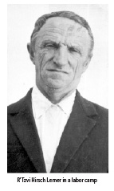
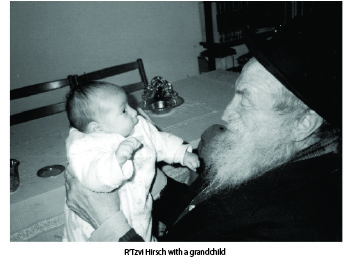

The Chassid Accused of Sorcery
Only four months after he married, the Chassid, R’ Tzvi Hirsch Lerner was arrested and sent to Siberia for seven years. * An unexpected encounter with a general led to his early release.* His granddaughter shares stories and memories, suffused with Chassidic flavor, about his outstanding character. * Part 2

Before he left for Siberia, his wife Sofia, my grandmother, tried to locate where he was imprisoned. She walked more than ten kilometers while carrying a bag of items for her husband on her back. In the end though, the two of them did not meet before he was sent to exile.
Now she remained alone without family, since her parents had moved to Eretz Yisroel, and was without a means of support. Being alone, she decided to go to her cousin who lived in Grozny in Chechnya. She stayed for a while but life there was difficult for her. This was because she was very particular about kashrus and living a Jewish life and that was not the lifestyle of this household.
In 5699/1939, she moved to Sochi and hired lawyers to file appeals in an attempt to free my grandfather from prison.
UNEXPECTED ENCOUNTER
In the meantime, Herschel worked under harsh conditions in Siberian labor camps. He was extremely capable and always found a solution for situations that arose. He was well liked by all. These traits were apparent during his years of incarceration.
He was once sent to work in a kitchen. While he was on duty, a high level delegation suddenly appeared to visit the prison. The general who led the delegation asked for a drink. My grandfather drew a cup of water from a barrel but then noticed a mouse in the cup. He quickly made a motion as though he was washing the cup again in honor of the general and then served him something fit to drink.
The general took the cup and then gazed at my grandfather as though trying to place him.
“Grigory Solomonovitz?” he asked.
My grandfather was taken aback. He nodded yes (for this is what he was called in Russian).
“How is it that you are here in prison? This is certainly an error! I will immediately have you released!” he exclaimed.
It turned out that the general had been his student in the military academy in 1933 when my grandfather taught mathematics there (as related in the previous chapter). My grandfather was greatly beloved by the students, many of whom later became high ranking officers.
The general returned shortly and apologetically said that he had not realized that my grandfather had been sentenced for article 58, a serious political offense, and therefore, he was unable to release him then and there. But he promised to make efforts on his behalf.
Indeed, a short time later, the general was able to have him released because of health reasons.
MY GRANDPARENTS WERE ACCUSED OF SORCERY 
As a released prisoner, he was not allowed to return to where he had previously lived or to live in a big city. So he and his wife moved to Saminovka, a forsaken place two hundred kilometers from Kamenets-Podolsk.
The living conditions were hard for all the residents and all the more so for this religious couple. The locals looked askance at activities having to do with mitzvos which is why my grandparents had to act secretly.
In order to shecht a chicken, my grandfather traveled thirty kilometers to Chorol where there was a shochet. When it came time to kasher the chicken, they closed all the windows. Despite this, the neighbors once discovered what they were doing and suspected them of sorcery. Another time, they saw my grandmother lighting Shabbos candles and they interpreted this as sorcery too.
MAZAL TOV
On 20 Teves 5700, their oldest child, Yaakov, was born. The bris took place a month later because the mohel was sixty kilometers away. Given the transportation at the time and under the wintry conditions of that year, the trip took a very long time.
With the help of family members, my grandparents were able to move to Poltava where the conditions were much better. There were other Jews as well as organized Jewish life. There was a Chabad community led by R’ Bespalov. It seemed they could finally relax but it was not for long.
In the summer of 5701/1941, World War II breached the borders of the Soviet Union. The Germans waged war against the Russians and earned stunning victories in difficult battles. The Russians continued to retreat and millions of people were forced to leave their homes and flee deeper into Russia.
My grandfather heard that the Germans had captured Kamenets-Podolsk. His entire family, along with all the Jews who remained there, were buried alive in a single day. Gentiles testified that the earth moved for three days after the massacre. He realized that his arrest and the subsequent law prohibiting him from returning to his home is what saved him from a similar fate.
Like other citizens, my grandparents and their little son fled Poltava. The trip on trains took many weeks. Every now and then the train would stop and my grandfather would get out and scavenge for food.
On their long journey, they stopped in Orjonikidze (since returned to its original name of Vladikavkaz) in Ingushetia. My grandparents decided to get off and try to live there until the end of the war. R’ Herschel took a job in a military hospital, which was an affiliate of the Leningrad Academy of Medicine. In 5703, when the hospital moved to Stalinabad (Dushanbe) they moved there too.
My grandmother began working in a textile factory and my grandfather worked at night as a porter for extra income. At that time, the best work was something in the vicinity of a kitchen where you could obtain food and not die of the prevalent starvation. My grandfather was drafted several times but was always released, thank G-d.
As a Chassid and the son of a Chassid, he did not only look out for his own welfare but sought out local Jews, gathered them together, and arranged a minyan, farbrengens, etc.
AN ATTEMPT TO UNITE THE FAMILY
When the war was over, the Russian government allowed Polish citizens to return to Poland. Many Russians did fictitious marriages with Polish citizens and were thus enabled to leave the Soviet Union. Many crossed the border with forged Polish passports.
One day, my grandfather saw R’ Mordechai Gruzman, a relative of ours, in shul. R’ Mottel had forged documents and was very nervous about being identified by my grandfather. However, he was happy to meet a relative.
R’ Herschel and Sofia’s second son, Moshe, was born on Shabbos, 21 Teves 5705. R’ Mottel helped heat the house and arranged for a mohel who did the bris on time, on Shabbos.
At this time, R’ Shmuel Segalovitch arrived in Stalinabad and told my grandfather that it was possible to arrange documents in Samarkand. He also told him about the beautiful Lubavitcher community in that city. My grandparents decided to travel to Samarkand and to see how things would work out.
To be continued, G-d willing
Beis Moshiach (staff). "The Chassid Accused of Sorcery." Beis Moshiach, no. 907 (December 17, 2013).